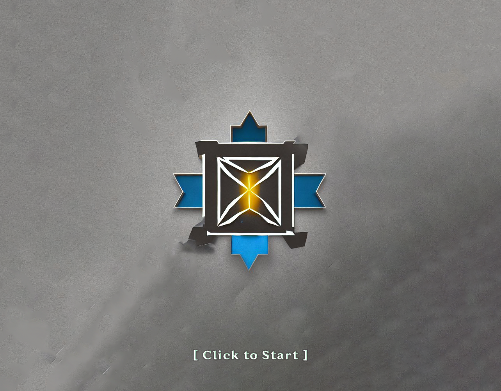
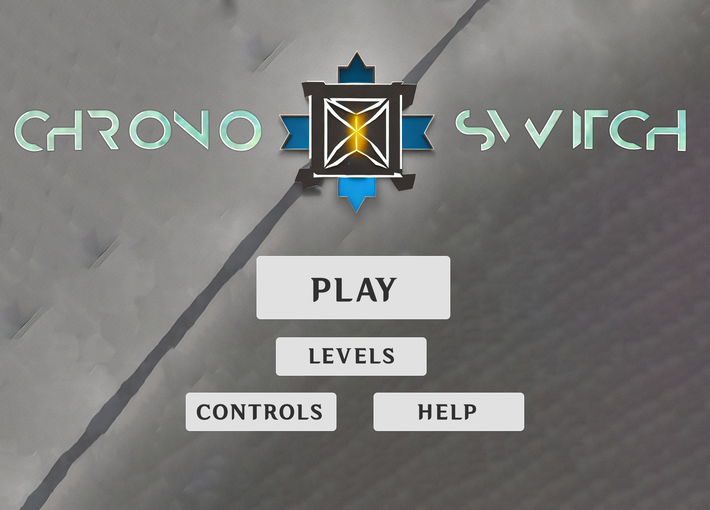
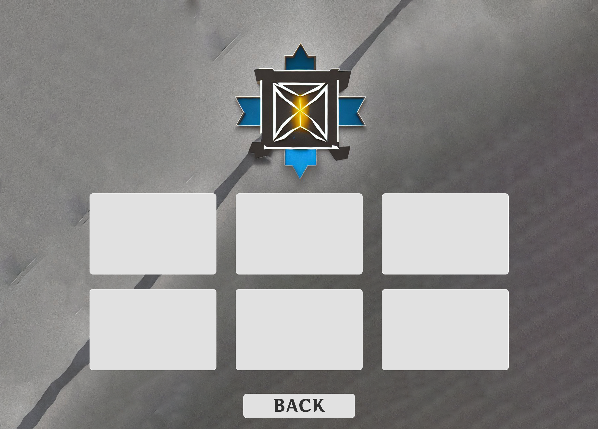
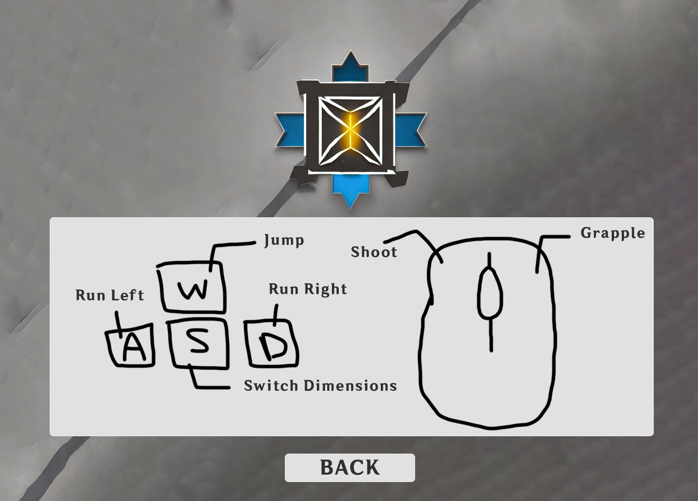
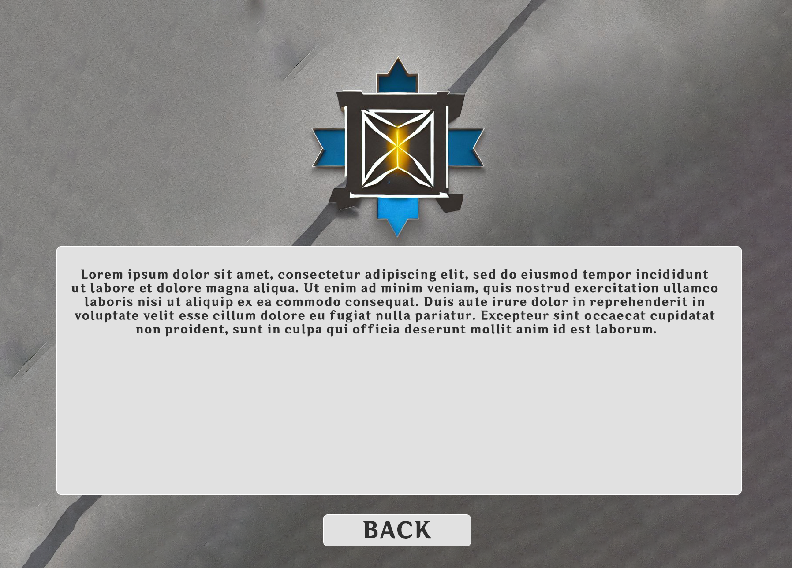
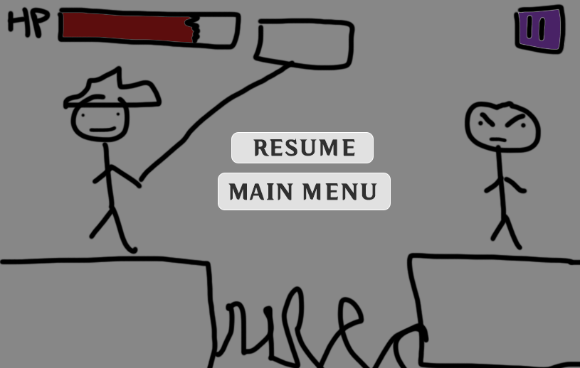

This document describes a game called “Chrono-Switch,” which is a 2D platformer with time travel and grappling hook mechanics, built using the Wolfie2D engine. It employs sprite-based animation, 2D physics, enemy AI, and creative level design.
Chrono-Switch will be developed using the Wolfie2D engine (https://github.com/WolfieEngine). The game will be written in TypeScript, and gulp will be used to transpile this into executable JavaScript code for browsers. We will use Audacity to create sound effects, and FL Studio to create music. Sprites will be created in Photoshop. The game will be hosted on Firebase.
Tepster Tomsper is a distinguished and capable hitman. One day while out running errands at Trader Joe’s, he stumbled upon the Chrono-Switch, a device that, when activated, allows him to travel back in time. Using his newfound god-like powers, he decided that it is his duty to eliminate the anachronistic fiends that are infesting the past and present.
Find ways to traverse the level and kill the given target. You will have to use both the grappling hook and the Chrono-Switch to find unique ways to get past certain obstacles such as spikes, enemies, gaps, and more. Tepster Tomsper uses the grappling hook and eventually a gun to defeat his opponents in a stylish and fun manner.
This game is played like a 2D platformer (move left/right, jump) with a few unique mechanics:
Pressing ‘s’ will allow you to switch between the past and the present. The game world will change depending on which timeline you’re in.
Once obtained, right-clicking will launch a grappling hook in the direction of the mouse cursor. The grappling hook will pull you towards it until you release right-click.
Traversing the level will require well-thought use of these mechanics. The goal of each level is to assassinate the target at the end.
Throughout the level there will be enemies patrolling, who will shoot at you if they see you. You can make use of your grappling hook or gun to dispatch them. Hitting them with your grappling hook will continuously pull them towards you, allowing you to use level hazards to your advantage.
This game will use a combination of keyboard and mouse inputs to control the character. The control scheme is listed below:
Tepster Tomsper: The main character, who will have animations for the following actions:
Enemies: Non-boss enemies scattered throughout the level which will have animations for the following actions:
Ground, walls, and platforms: These assets will be tiled to allow for greater flexibility when creating levels. Walls and platforms will be able to be interacted with using the player actor or the grappling hook.
Background: We will have a parallax background depicting a high-quality render of the level that the player is currently playing.
Splash Screens: There will be a main menu splash screen with original artwork and there will be a level complete splash screen.
All sound effects will be original. We will add sound effects for at least the following events:
Additionally, each level will have its own original music track. Reverb will be added to the music while in the past for atmospheric purposes.
Splash Screen
Main Menu
Level Select
Controls
Help
In-Game Pause Menu
